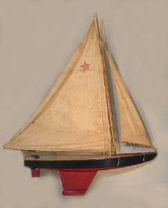

STANDARD SITE | Map | Shop Inventory | Services | Home
One of our loves with respect to antiquities are Maine marine related items. It is a piece of our heritage that offers a great deal of caricature and reflects Maine as it once was. Our favorites are pond boats, dioramas, half hulls, and fine ship and seascape paintings.

Click here for more photos of both past & current inventory.
STANDARD SITE | Map | Shop Inventory | Services | Home